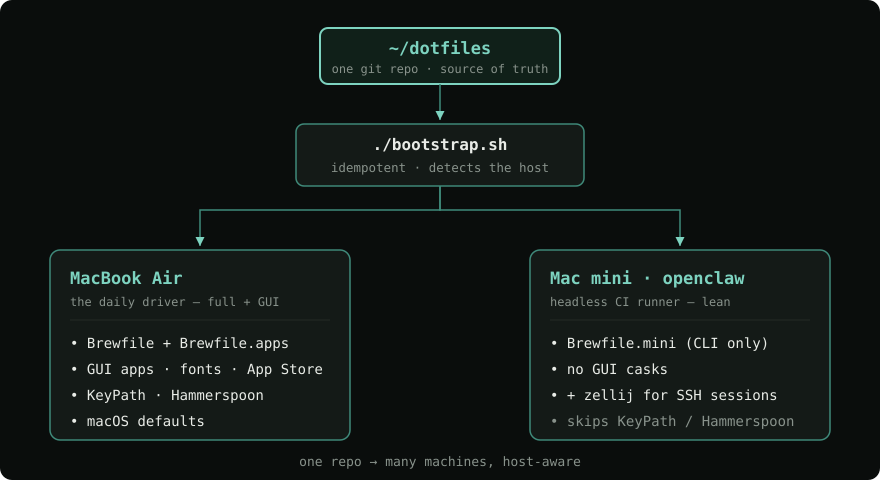
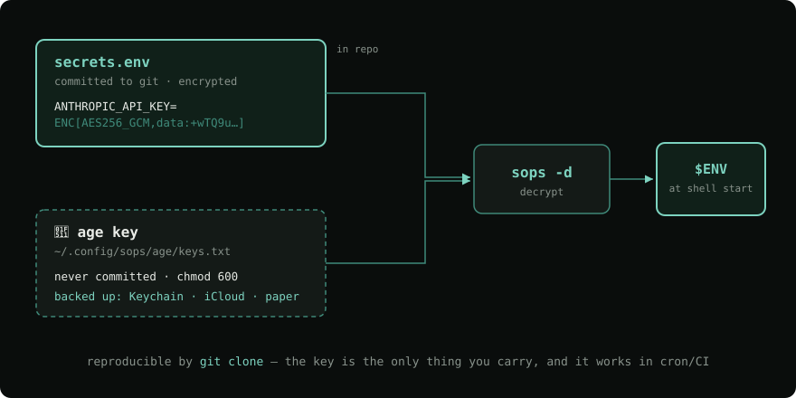

There's no place
like ~/
Making a Mac reproducible from a git repo — and taming a headless Mac mini — with dotfiles, sops, uv, and a few self-inflicted wounds.

I needed a new laptop.
My cat bit the LCD. The bottom third of the screen is a smear of dead pixels — it's off for repair.
Her third device since COVID. Laptops and monitors.
Reproducibility isn't academic when your hardware has a predator.
New laptop. Now what?
Two days of "wait… how did I set that up?" Re-installing tools from memory, hunting old config, re-pasting API keys. And the worse version — drift: two machines that started identical and silently diverged.
The mini that broke quietly
A headless Mac mini — my CI runner. One day I look closer:
• its GitHub Actions runner had silently deregistered
• its .gitconfig had grown to 2,581 lines
[core]
directory = …/KeyPath
directory = …/KeyPath
directory = …/KeyPath
directory = …/KeyPath
# × 2,500 more
# (every CI job appended one)A laptop you can
git clone.
Not a snowflake. A repo.
The principle.
Three rules that make a machine reproducible.
Declarative state + thin bootstrap + secrets out-of-band
- Declarative state in git — what should exist: dotfiles, a
Brewfile, configs. The source of truth. - A thin, idempotent
bootstrap.sh— applies it. Safe to run a hundred times. - Secrets out-of-band — never plaintext in the repo. (More in Ch. 3.)
…and host-aware: one repo, many machines.
The build.
From a blank Mac to a working one, one command.
bootstrap.sh installs its own prerequisites
# Command Line Tools → Homebrew → oh-my-zsh, only if missing
xcode-select -p &>/dev/null || xcode-select --install
command -v brew &>/dev/null || /bin/bash -c "$(curl -fsSL …/install.sh)"
[ -d ~/.oh-my-zsh ] || RUNZSH=no KEEP_ZSHRC=yes \
sh -c "$(curl -fsSL …/ohmyzsh/install.sh)"
# then: symlink dotfiles, trust taps, brew bundle, uv tool install …No-op on a configured machine. KEEP_ZSHRC=yes so it can't clobber yours.
Host-aware bootstrap
case "$(scutil --get LocalHostName)" in
openclaw*) IS_MINI=true ;; # headless CI mini
esac
BREWFILE="Brewfile" # laptop: full + GUI
$IS_MINI && BREWFILE="Brewfile.mini"
brew bundle --file="$BREWFILE"
The secrets.
How do you commit secrets… without committing secrets?
Encrypted in the repo, decrypted at startup
# secrets.env — committed to the (private) repo, values encrypted:
ANTHROPIC_API_KEY=ENC[AES256_GCM,data:+wTQ9u…,type:str]
OPENAI_API_KEY=ENC[AES256_GCM,data:wVJ3GN…,type:str]
# .zshrc, interactive shells only:
set -a; source <(sops -d ~/dotfiles/secrets.env); set +a
Reproducible by git clone. Why not 1Password? It needs
interactive unlock — it dies in cron/CI. Same reason I'd ditched Keychain.

One key to rule them all
The encrypted secrets are reproducible. The age key that decrypts
them is the one thing that isn't in git.
So it's the one thing you actually back up — Keychain, iCloud, and a printed copy.
~/.config/sops/age/keys.txt
AGE-SECRET-KEY-1………………
🔑 crown jewel.
lose it → secrets gone.
back it up 3 ways.The fleet.
Driving the mini from the laptop — without it drifting again.
Sync, see drift, update — by policy
mini-sync # push my dotfiles to the mini (pull + bootstrap)
mini-status # disk · CI runners online? · dotfiles vs origin: N behind
# topgrade, with a DIFFERENT policy per machine:
# laptop.toml → aggressive: latest everything
# openclaw.toml → only = ["brew_formula","custom_commands"] # conservative
A pre-push git hook nags me to mini-sync when shared files change.
The CI box never auto-updates — a brew upgrade mid-build is a bad day.
The scars.
Everything that went wrong. (The fun part.)
Things that broke, and what they taught me
brew autoremoveate my keyboard's QMK flashing toolchain — an untrusted tap made its deps look orphaned. → declare them as leaves;autoremove=falseon CI.- qmk's vendored Python venv broke on macOS beta. →
uv tool install qmk. - sops couldn't find its key — macOS looks in
~/Library/…, not~/.config. → setSOPS_AGE_KEY_FILE. - GitHub silently deletes idle self-hosted runners. → surface status in
mini-status. - "The mini has no Homebrew!" It did — non-interactive SSH just hides it from
$PATH.
uv all the way down
The fast Python tooling that kept showing up:
• uv tool install — pipx successor, even for non-Python CLIs
• mise — pinned Python & runtime versions, per project
My keyboard firmware CLI runs on uv now.
uv tool install qmk
mise use python@3.14
# reproducible, fast,
# no system-python roulette.Did it actually work?
# cold-boot the whole thing into a throwaway HOME
TESTHOME=$(mktemp -d)
git clone -q ~/dotfiles "$TESTHOME/dotfiles"
HOME="$TESTHOME" bash "$TESTHOME/dotfiles/bootstrap.sh"
# → exit 0 · symlinks ✓ · oh-my-zsh ✓ · plugins ✓ · 0 errorsA reproducibility claim you haven't tested is a wish.
What to steal.
- Declarative + idempotent beats a setup doc you'll never update.
- sops + age: secrets that live in git, safely.
- Reproducible ≠ Migration Assistant — you skip the cruft, keep the intent.
- Make drift visible; the principles transfer to any OS or team.
Q & A
github.com/malpern/dotfiles
Micah Alpern · Hacker Dojo Python Meetup